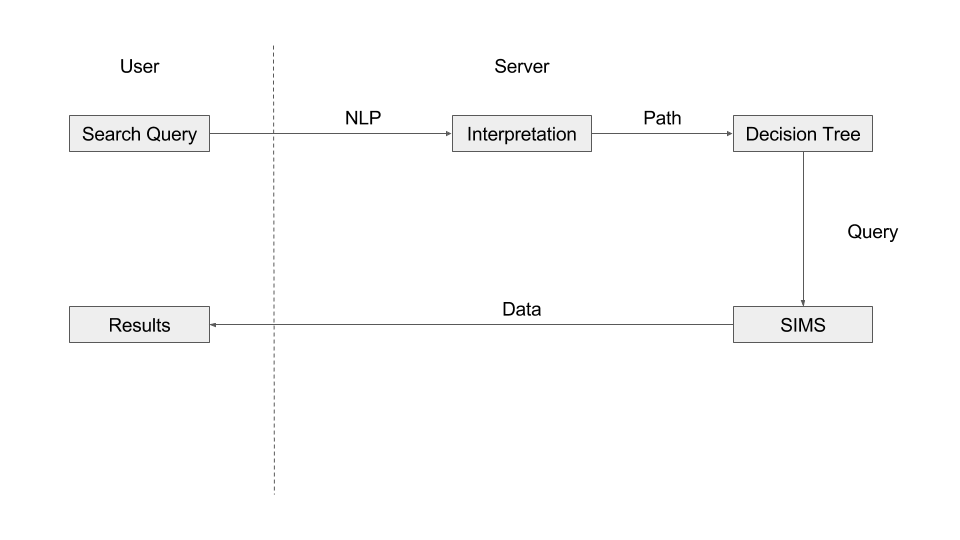
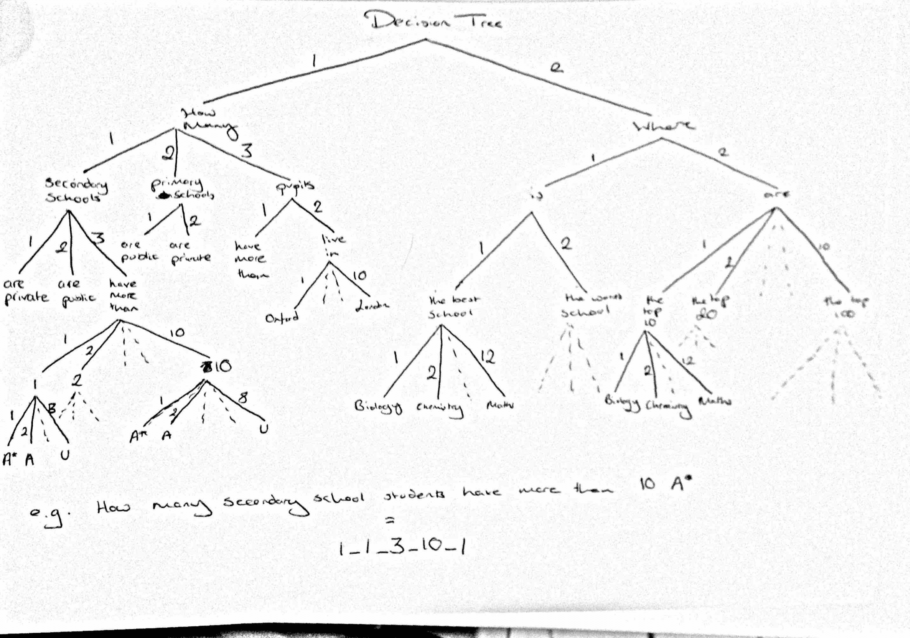
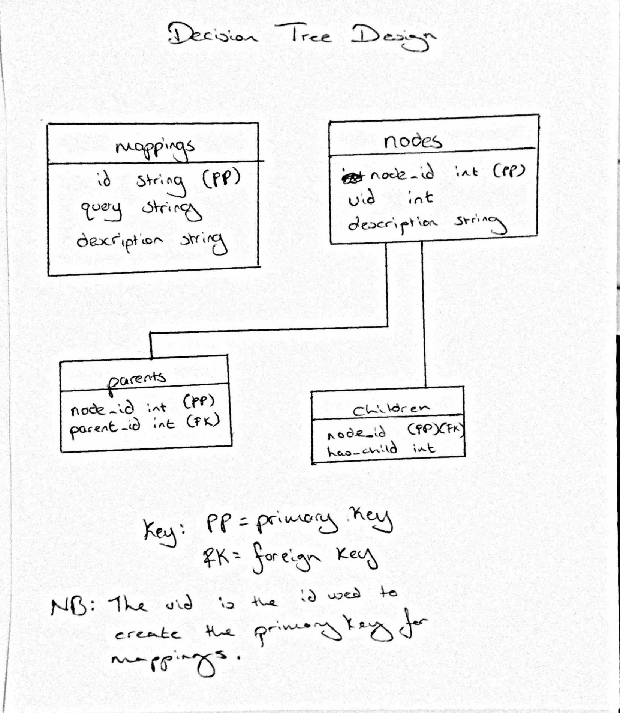
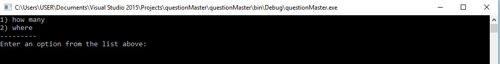
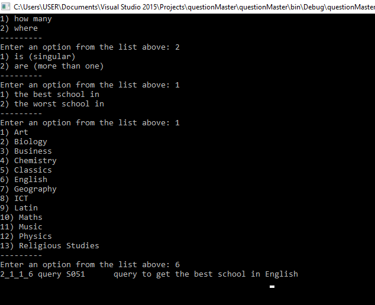

Problem
Task : Create an engine where users can ask questions and use the SIMS data to create a model that can answer any question.
Challenges :
- Natural Language Processing (NLP)
- Creating (ideally an) unsupervised machine learning system to interpret the questions. Otherwise a supervised (or semi-supervised) machine learning system
- Decision tree to map interpretations to an SQL query.-
- Deploying a cloud service to receive and send data from server-to-client
Research
Natural Language Processing Solutions
- Word2Vec (Discontinued. Supervised machine learning and will take long time to extract data needed to train Word2Vec model)
- Restricted Boltzmann Machine (RBM) (Proposed solution, possibility to seeing how deep delief nets perform in NLP)
- Latent Dirichlet Allocation (Discontinued. Only significantly better than RBM for unigram models, RBM significantly better for all other (n-gram) models)
- Resource Depcription Framework (RDF) Path Traversal (Discontinued)
- Fuzzy concepts and fuzzy logic (Discontinued)
Deployment
- Deploy app on Windows 2012 Server using Microsoft Azure
- Use REST API to transmit data
- MySql database for storage
Decision Tree
- Decision tree stored in a MySql database
- Use of foreign keys as pointers to allow scalability
Solution
Overview
The user enters a search term, then we use natural language processing to create an interpretation, which is essentially a path to traverse along the decision tree. Once the path has been traversed, the decision tree will return an SQL query than can be called on the SIMS database to get the most likely answer. The flow chart below shows the overview of the system.
Prototype
Below is a diagramatic overview of the decision tree. A phrase is generated though a particular path that in turn maps to an SQL query used to retrieve data from SIMS.

Decision Tree in MySql:
The implementation of the decision tree in MySql. Entity
relationship diagram between tables is
shown below.

The diagrams below show a basic commandline application showing a user navigating through the
decision tree. When the user finishes navigating the decision tree, the path is returned with the
SQL query to answer the question and a description of the query. The user can then execute the SQL
query against the SIMS database and retrieve their desired answer.
At this stage we could not generate the SQL queries as we were experiencing issues setting up the SIMS software.
